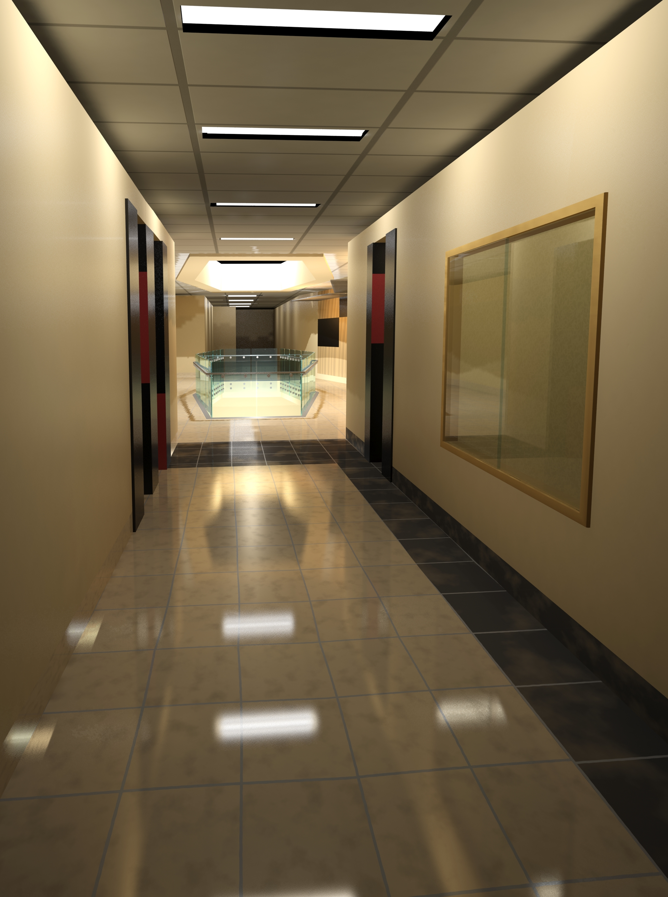

Screenshots of my various 3D, animation, and programming projects.
One of my first projects in 3DS MAX, I recreated teh animation lab in the Computer Science building at EWU with only the scaneline renderer.

Using the Mental Ray renderer in 3DS MAX, this is a recreation of part of Patterson Hall at EWU with the main goal being photorealistic lighting.
Done as an introduction to illustrator, this is one of my best works in the more traditionally artistic sense.
Done as a group project, this game is created entirely in javascript using the game library phaser. We created it for the locally owned Spokane business Flamin' Joes.
A project done in the Unity engine, I created a basic top down shooter, where you fight off waves of skeletons in a graveyard.